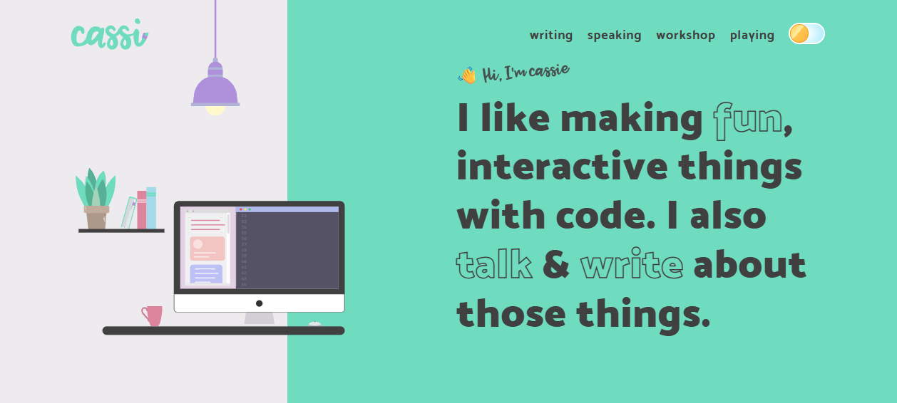

Animation Craft
Motion is choreography over scroll; animation is the grammar underneath it — the keyframes, the easing curve, the stagger interval, the spring constant. This page is the toolbox: how the best 80 sites author transitions and keyframes, when they reach for GSAP vs. Motion vs. native CSS, how they turn a loading screen into a craft moment, and the two properties (transform + opacity) that keep all of it at 60fps. If Motion is the "what moves," this is the "how it feels."
1 · Easing is the whole personality
Two animations with identical duration and distance feel like different products based on one thing: the easing curve. Nothing in the physical world accelerates linearly, so linear motion reads as robotic and cheap. The single highest-leverage upgrade you can make to any animation is to delete linear and pick a real curve.
Cassie Evans ↗, a GSAP core-team member, loads CustomBounce / CustomWiggle / CustomEase so "motion has weight and personality, not linear tweens" — the hanging lamp swings, elements overshoot and settle. Stripe ↗ goes the opposite, disciplined direction: easing is codified into design tokens (standardized durations + easings + choreography) so every sequence is predictable and reusable. Robin Noguier ↗ mixes spring physics with explicit Bezier-Easing curves "where a precise easing is wanted." Family ↗ matches curve to brand — rounded illustrations get bouncy, springy curves, never sharp linear ones.
Same distance, same 1.6s duration — four curves. The curve is the feeling:
cubic-bezier(.16,1,.3,1) (expo-out) is the agency default — a confident snap that decelerates into place. The back-out curve has a control point >1, so it overshoots and settles: that overshoot is what the eye reads as "tactile."The two-rule heuristic that covers 90% of UI motion: use ease-out for entrances (fast start, gentle settle — the object arrives and relaxes) and ease-in for exits (it accelerates away). Reserve overshoot / spring for small, playful, low-stakes elements — buttons, toggles, toy-like UI à la Cassie Evans — never for primary content reveals, where overshoot reads as imprecise. Keep durations short: 150–400ms for UI, up to ~600ms for large hero motion.

CustomWiggle curve, the headline's outlined keywords (fun, talk, write) bounce in with CustomBounce, and the SVG logo draws itself via DrawSVGPlugin. No linear tween anywhere — every motion has overshoot and weight.2 · Transitions vs. keyframes — pick the right tool
Before any library, CSS gives you two native primitives, and choosing wrong is the most common beginner mistake.
transition— animates between two states (A → B), triggered by a state change (:hover, a toggled class, a media query). Perfect for hover micro-states, reveals (resting ↔ revealed), accordions. It cannot loop and has no intermediate steps.@keyframes+animation— a fully authored timeline with intermediate frames (0% → 50% → 100%), that can loop, alternate, delay, and run on load with no trigger. This is for spinners, idle bobs, marquees, intro sequences.
Robb Owen ↗ earns Awwwards-grade "elegant motion design" praise with zero animation library — just hand-rolled CSS transitions + keyframes in a single main.js. Jhey Tompkins ↗ ships a single-screen bio with "7 active CSS animations detected on load" — pure keyframes, no GSAP, where a mascot blinks and idles. Proof you do not need a library to win.
/* transition — state-to-state, the workhorse of hover/reveal */
.card {
transform: translateY(0);
transition: transform .4s cubic-bezier(.16,1,.3,1), box-shadow .4s ease;
}
.card:hover { transform: translateY(-6px); box-shadow: 0 16px 40px rgb(0 0 0 / .3); }
/* @keyframes — an authored, loopable timeline (no trigger needed) */
@keyframes float {
0%, 100% { transform: translateY(0) rotate(0); }
50% { transform: translateY(-12px) rotate(-4deg); }
}
.mascot { animation: float 3s ease-in-out infinite; }Set the resting state as the CSS default, never the animated one. If JS adds the trigger class, a no-JS or reduced-motion visitor must still see finished content — author entrances as "the .in class adds the reveal," not "the default is invisible and JS reveals it." Otherwise a script failure or a slow connection leaves your page blank.
3 · Stagger & entrance choreography
Revealing ten elements simultaneously feels like a flash; revealing them 40–80ms apart feels like a wave with rhythm and intent. Stagger is the cheapest way to make a reveal feel designed rather than dumped.
Hello Monday ↗ staggers column offsets so cards fade/translate in with "amplified" rhythm across an asymmetric grid. Dennis Snellenberg ↗ uses GSAP ScrollTrigger for staggered text/line reveals on work rows. Lusion ↗ and Aristide Benoist ↗ both pre-split headlines into individual character spans (Lusion even duplicates glyphs — "O O O r r r y y y") for per-letter stagger and marquee effects. Vercel ↗ renders its final CTA as individually spaced spans ("S t a r t D e p l o y i n g") as a per-character motion hook.
Stagger in action — replay to feel the wave:
transition-delay: index × 70ms. Same animation on every chip — the offset is the entire effect.Pure CSS handles a fixed count cleanly; GSAP's stagger handles dynamic lists and gives you eases across the stagger (e.g. start fast, end slow):
/* CSS: fixed list, delay = nth-child index */
.item { opacity:0; transform:translateY(16px); transition:.5s var(--ease); }
.item:nth-child(1){ transition-delay:0ms } .item:nth-child(2){ transition-delay:70ms }
.item:nth-child(3){ transition-delay:140ms } /* … */
.ready .item { opacity:1; transform:none; }// GSAP: dynamic list, one line, plus easing across the stagger
gsap.from('.item', {
y: 24, opacity: 0, duration: .6, ease: 'expo.out',
stagger: { each: 0.07, from: 'start' }, // or 'center' / 'edges' / a grid
});
// Split a headline into chars first (GSAP SplitText), then stagger them:
const split = new SplitText('h1', { type: 'chars' });
gsap.from(split.chars, { yPercent: 120, stagger: 0.03, ease: 'back.out(1.7)' });4 · Spring physics & the feel of weight
Bezier curves are duration-based: you declare "600ms with this curve." Springs are physics-based: you declare stiffness, damping, and mass, and the animation runs until it naturally settles. Springs feel more alive because their velocity is continuous — interrupt one mid-flight and it carries momentum into the new target instead of snapping.
Robin Noguier ↗ drives his entire scroll-hijacked slide showcase with React-Spring — "projects snap/interpolate in" with spring physics rather than linear scroll, plus useTransition for app-like route changes. Lusion ↗'s hero connector cluster reacts to the pointer with "momentum/spring motion and real-time shadow updates." Josh Comeau ↗ — who literally teaches a course on spring physics and "whimsical animations" — uses spring-based motion and squash-and-stretch in his site's microinteractions. Framer ↗'s Motion library is spring-first by default.
// Motion (the Framer Motion successor) — springs are the default transition
import { motion } from 'motion/react';
<motion.div
initial={{ opacity: 0, y: 24 }}
animate={{ opacity: 1, y: 0 }}
transition={{ type: 'spring', stiffness: 320, damping: 28, mass: 1 }}
/>
// Lower damping = more overshoot/bounce. Higher stiffness = snappier.
// No `duration` — the spring settles when the physics say so.Tune springs by feel, not by number. Start at stiffness: 300, damping: 30 (a clean, barely-overshooting snap). Want bounce? Drop damping toward 15. Want it heavier/slower? Raise mass. The killer feature is interruptibility: a spring animating to a new target mid-flight inherits its current velocity, so rapid hover-on/hover-off never looks janky — something duration-based transition can't do.
5 · The tooling ladder — reach down before you reach up
The corpus reveals a clear hierarchy. Start at the cheapest tool that does the job and only climb when you genuinely need to. Vercel ↗ publishes this as an explicit engineering rule: motion priority is CSS > Web Animations API > JS libs.
1 · CSS transitions / keyframes
Compositor-driven, zero JS, free. Covers hovers, reveals, spinners, loops, marquees. Robb Owen ↗ & Jhey Tompkins ↗ win awards on this tier alone. Default here.
2 · Web Animations API (WAAPI)
CSS-keyframe performance with JS control (chain, pause, reverse, await .finished). Stripe ↗ authors motion in "vanilla JS with no heavy library" via WAAPI. Best for orchestrated sequences without a dependency.
3 · GSAP
The timeline workhorse: precise sequencing, ScrollTrigger, SplitText, bespoke eases, SVG morph/draw. Cassie Evans ↗, Dennis Snellenberg ↗, Basement Studio ↗. Reach here for complex choreography or scroll-scrubbing.
4 · Motion / React-Spring
Declarative, spring-physics, component-state-driven, interruptible. Family ↗, Linear ↗, Framer ↗ (Motion), Robin Noguier ↗ (React-Spring). Best inside React/component UIs.
The split in practice: agency / creative-dev portfolios lean GSAP (timeline control, scroll-scrubbing, SVG, vanilla-JS friendliness) while product / React marketing sites lean Motion (state-driven, springy, declarative). Stripe ↗ and Obys Agency ↗ deliberately use neither — "you do NOT need GSAP for everything; a small requestAnimationFrame loop driving the scroll-sync is enough and lighter."
// Same fade-up entrance, three tiers — note the cost climbing:
/* TIER 1 — CSS only. Free, compositor-driven, no JS. */
.fade { opacity:0; transform:translateY(20px); transition:.6s cubic-bezier(.16,1,.3,1); }
.fade.in { opacity:1; transform:none; }
// TIER 2 — WAAPI. JS control, still no dependency.
el.animate(
[{ opacity:0, transform:'translateY(20px)' }, { opacity:1, transform:'none' }],
{ duration:600, easing:'cubic-bezier(.16,1,.3,1)', fill:'forwards' }
);
// TIER 3 — GSAP. Only when you need timelines/stagger/scrub.
gsap.from('.fade', { y:20, opacity:0, duration:.6, ease:'expo.out', stagger:.07 });6 · Loop & idle animation — keeping a page alive
An idle/loop animation is motion that runs continuously without user input: a logo orb pulsing, illustrations bobbing, a loading shimmer, a rotating word. Used sparingly it signals "this page is alive and responsive"; overused it's a battery-draining distraction.
Family ↗ floats illustration elements with "gentle physics/parallax and idle bob animations so the hero feels alive rather than static." Active Theory ↗ makes a single glowing logo orb the "loading/idle centerpiece" that anchors every state. Hello Monday ↗ runs a rotating-word hero — the headline literally cycles its disciplines on a loop instead of a static tagline. Lusion ↗ and Dennis Snellenberg ↗ run bleeding marquee wordmarks looping off both edges.
Four infinite-loop primitives — all pure CSS @keyframes:
@keyframes + animation: … infinite. The shimmer is a moving background-position gradient — the canonical skeleton-loading effect.Looping animation is a battery and attention tax that never stops. A perpetually spinning/pulsing element on screen burns GPU cycles every frame for as long as it's visible. Pause loops when off-screen (IntersectionObserver) or in background tabs — Obys Agency ↗ explicitly "pauses tweens in background tabs." And never set a busy idle loop near body copy: continuous peripheral motion makes text measurably harder to read.
7 · Preloaders as craft, not apology
A preloader is the most over-apologized-for screen on the web — but the best sites treat it as the first act of the experience, not dead time. When a site must compile shaders or warm a WebGL scene, a deliberate intro covers the work and sets the tone before the hero even arrives.
Lusion ↗ gates entry with a numeric "100" counter on black that "masks shader compile / asset load, then transitions into the live scene." Obys Agency ↗ counts up a % indicator over a circular mask reveal (caught at "94" mid-load). Dennis Snellenberg ↗ turns the loader into a personality moment: a rotating multilingual greeting ("Hello / Bonjour / Ciao / こんにちは…") that doubles as the load sequence. Basement Studio ↗ uses a "staged loader → composite reveal" to cover WebGL warm-up "instead of a flash of unstyled content."

A real progress counter (0→100) is worth far more than a generic spinner: it converts uncertain waiting into a measurable, almost-done feeling, and it's a free canvas for personality (a greeting cycle, a brand mark, a count-up). The rule: only show a preloader when there's real heavy work to mask (WebGL/shaders/large media). On a fast content site, a fake preloader just inserts a delay you didn't need — ship the content instead.
// A real, honest preloader: drive the counter off actual load progress,
// then animate out. No fake timers.
const items = [...document.images, ...customAssets];
let loaded = 0;
const counter = document.querySelector('.preload-num');
function bump() {
loaded++;
const pct = Math.round((loaded / items.length) * 100);
counter.textContent = pct; // honest 0 → 100
if (loaded === items.length) reveal();
}
items.forEach(a => a.complete ? bump() : a.addEventListener('load', bump));
async function reveal() {
await document.querySelector('.preloader').animate(
[{ transform:'translateY(0)' }, { transform:'translateY(-100%)' }],
{ duration:700, easing:'cubic-bezier(.7,0,.2,1)', fill:'forwards' }
).finished;
startHero(); // kick off scene only after reveal
}8 · Performance — the 60fps contract
Every animation is rendered 60 times a second (more on high-refresh screens). Cross the per-frame budget and you get jank — and on a portfolio, janky animation is worse than no animation, because it actively signals a lack of craft. The rules below are non-negotiable and the corpus is unanimous.
Animate only transform and opacity
Stripe ↗ states it flatly: animate only transform and opacity, never layout properties (width / height / top / left / margin). Layout props trigger layout → paint → composite on every frame; transform and opacity skip straight to composite, handled by the GPU off the main thread. Vercel ↗ bans "layout-triggering animation." Apple ↗'s discipline: "most effects are simple GPU-friendly transforms + timed easing."
/* ❌ janky — animates layout, recalculates geometry every frame */
.box { left: 0; transition: left .4s, width .4s; }
.box:hover { left: 200px; width: 320px; }
/* ✅ smooth — same visual result, compositor-only, never touches layout */
.box { transform: translateX(0) scaleX(1); transition: transform .4s; }
.box:hover { transform: translateX(200px) scaleX(1.4); }Use will-change like a scalpel, not a sledgehammer
will-change promotes an element to its own GPU layer ahead of animating, avoiding a first-frame hitch. But every promoted layer costs memory, and blanket-applying it (* { will-change: transform }) exhausts GPU memory and makes things slower. Set it just before the animation, remove it after.
/* Apply narrowly — ideally on hover-intent, then drop it on animationend */
.card:hover { will-change: transform; }
/* or in JS: add before animating, remove when .finished resolves */Honor prefers-reduced-motion — every time
Obys Agency ↗ proves heavy motion and fast LCP (≈1.3s) coexist: it "freezes glyph morphs and swaps slide-ins for fades" under reduced-motion, and keeps a real progress preloader. Stripe ↗ evaluates the query at runtime. This isn't optional polish — for users with vestibular disorders, unchecked motion causes physical nausea. shared.css already collapses transitions/animations under reduced-motion; your JS must gate scroll-jacking, loops, and observers behind the same query.
/* The floor every animated site must ship. */
@media (prefers-reduced-motion: reduce) {
*, *::before, *::after {
animation-duration: .001ms !important;
animation-iteration-count: 1 !important; /* kills infinite loops */
transition-duration: .001ms !important;
}
}// JS side — gate the expensive stuff behind the same query.
const reduce = matchMedia('(prefers-reduced-motion: reduce)');
if (!reduce.matches) { startLoops(); startSplitText(); startScrollScrub(); }
reduce.addEventListener('change', () => location.reload());A correct microinteraction in miniature — transform-only, springy curve, fast active state:
back-out curve (overshoot = tactile); :active snaps down in 80ms (button "obeys" instantly). Only transform + box-shadow animate — no layout, so it's compositor-cheap.The whole animation craft, distilled: delete linear (ease-out for entrances, spring for play) → transition for state, keyframes for loops → stagger 40–80ms so reveals read as a wave → climb the tooling ladder only when CSS runs out (CSS → WAAPI → GSAP → Motion) → make the preloader the opening act, not an apology → and bind every effect to the 60fps contract: transform + opacity only, surgical will-change, and a hard prefers-reduced-motion gate. Janky motion is worse than none.